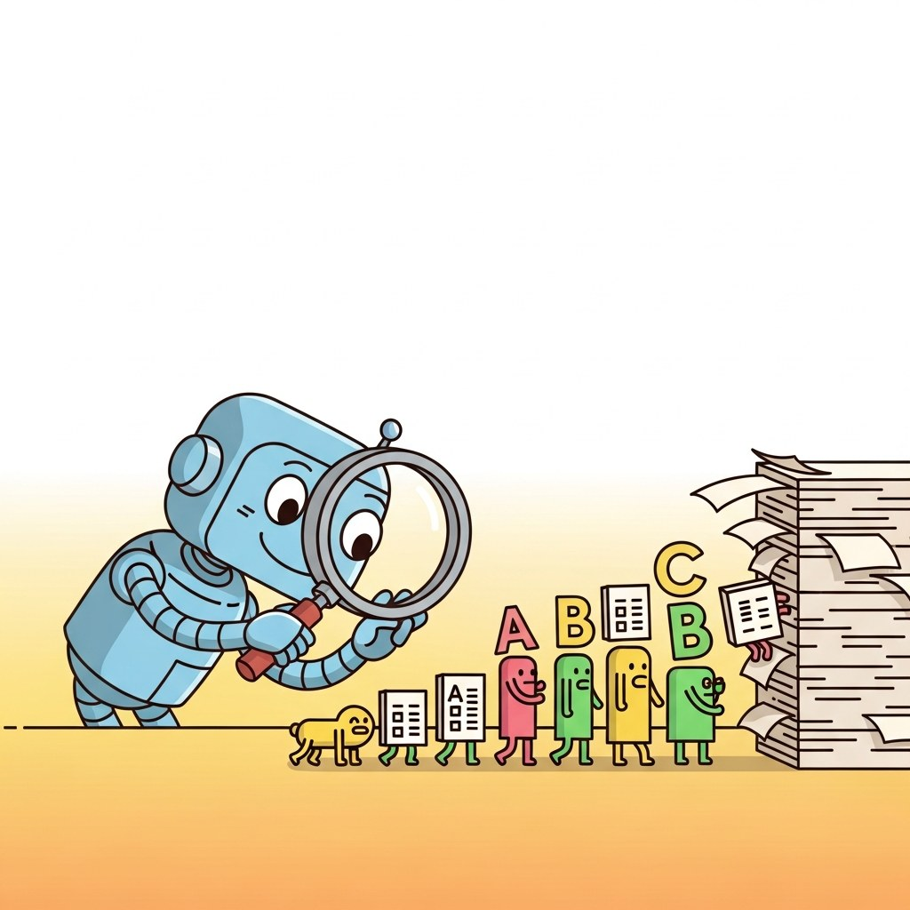

Big Picture
Modern OCR (TrOCR), layout-aware models, VLM-based document understanding, and document AI pipelines.
Sections
- 21.1 Modern OCR: TrOCR and End-to-End Recognition TrOCR, Donut, DocLayNet, end-to-end document understanding, and accuracy benchmarks. Entry
- 21.2 Layout-Aware Models: LayoutLM Family LayoutLM v1, v2, v3, LiLT, Donut, and fine-tuning on FUNSD. Intermediate
- 21.3 VLM-Based Document Understanding GPT-4V, Claude Vision, Gemini, Qwen-VL Doc, PaperQA, and structured JSON extraction from PDFs. Advanced
- 21.4 Building Document AI Pipelines Ingestion, parsing, table detection, KV extraction, validation, reconciliation, and cost-latency tradeoffs. Advanced